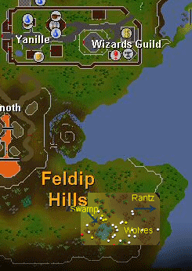
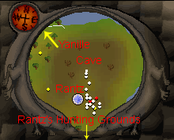
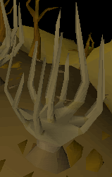
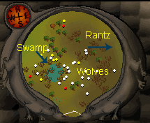
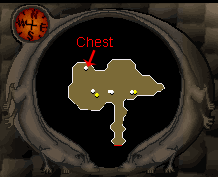
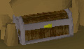
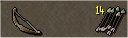
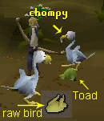
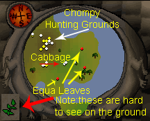
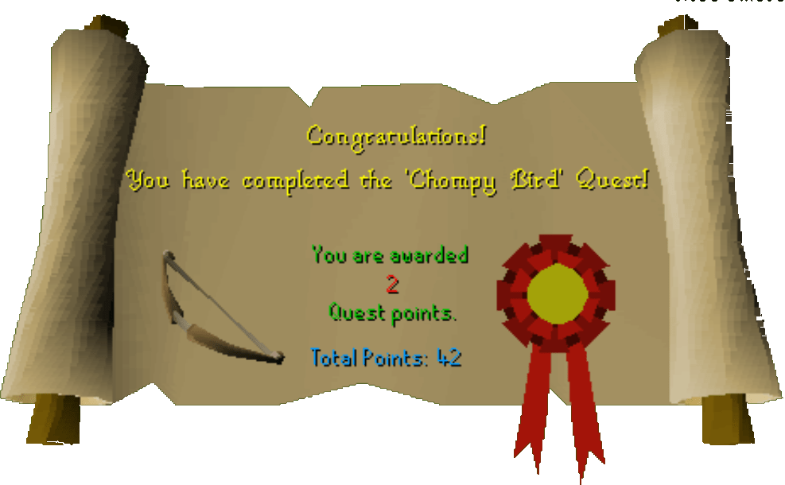

Big Chompy Bird Hunting
Description: Rantz the Ogre needs to feed his demanding children, Fycie and Bugs so he wants to go Big Chompy Bird hunting. Problem is, he's all fingers and thumbs when it comes to making ogre arrows. Could someone please give him a hand.Difficulty: Intermediate
Length: Short
Items & Skills Needed:
- 5 Fletching
- 30 Cooking
- 30 Ranging
Recommended:
- Weapons/armor to kill a level 64 wolf if necessary (can be safespotted)
Reward: 2 Quest points, 735 Ranged XP, 262 Fletching XP, 1,470 Cooking XP, Ogre Bow, the ability to make Ogre Arrows
Instructions:
Talk to Rantz who is southeast of Yanille.


He will tell you to make some ogre arrows, 'stabbers'
which are arrows using an Achey Tree for shafts and Wolves bones for tips. You need normal feathers.
First you will need your axe to cut down the Achey Trees. You will need about 10 logs to do the quest. Then take your knife and cut the logs like normal arrows.

Then, add your feathers to the arrow shafts you made from the Achey logs.
Now for the tips, you have to kill a level 64 Wolf, they are just west of where you find Rantz, kill the wolf and pick up wolf bones.

You will need 3-6 wolves to make enough arrows. You need at least 12-15 tips.
Use your Chisel with the bones to make some arrow tips out of the bones. You can make from 2-6 arrow tips from each set of bones.
Add your arrow tips to the arrow shafts that you previously placed feathers on.
You will need to make 6 or more, when you have made the arrows, go talk to Rantz. If you are smart, you make 12 or more arrows because you will need some later when you have to kill the Chompy for Rantz. You can make as many as you want because you can use the arrows later to increase your Chompy Bird hunter level. Right click on the bow to check the level.
Now you will need to bait the Chompy Bird, go to the cave that is a bit north of Rantz, go in and talk to the 2 ogres in there, they are his sons.


When you finish talking to them, go search the Chest in the north west of the cave.
You will get an Ogre Bellows, now go to the swamp just west of Rantz, there is some bubbles coming out of the swamp, use the bellows with the bubbles and you will fill the bellows with gas.
Now use the bellows with the Swamp toads around the area, The toad will fill with gas and grow big and then the toad will automatically get placed in your inventory. You will need 3 toads full of gas. (You can't get more than 3 at a time)
When you got the fatty toads, go to Rantz and he will tell you to drop the drop the toads with gas south of him. An arrow will appear that points to the Chompy Hunting Grounds south of Rantz, drop the toads in the area where he showed you.
When you have dropped the toads go back to Rantz and he will shoot at the birds, but he won't hit it and blame it on your arrows, tell him you want to try it, if you ask him enough times you will get a ogre bow.
Note: If you lose your bow, you can buy another one from Rantz for 500 coins.
Now if you didn't make extra arrows above, you will need more arrows so do the steps above again to make at least 5 arrows.

(here is a picture of the Bow and Arrows that you will need)
Now get 3 more Toads as per above and drop them the same place as Rantz told you before. Walk away a few feet to allow the birds to get at the toads. The Chompy will fly down near the toads you placed there, shoot it. When it dies go pluck it.

When you have plucked the Chompy, there will be raw Chompy Bird on the ground with some bones and some feathers, grab the feathers if you wish to make more arrows, and then take the raw Chompy Bird to Rantz.
Rantz will tell you that you have to cook the bird for him. He will also tell you how he wants it cooked, or what he wants on the cooked Chompy Bird and tells you to go ask his sons, too, for their food orders. Note the food items you need. The sons are still in the cave north of Rantz. The items needed varies each time between these food items: cabbage, tomato, potato, onion, equa leaves, or doogle leaves.

The food items can be found around the Ogre city area and around the area where Rantz is:
The Onions and Tomatoes are just west of the swamp with the toads.
The Cabbage is in various locations including just north of the swamps with the toads, and around the equa leaves.
The Doogle leaves are west of the onions.
The potatoes and equa leaves are found at the shore south, then east, of Rantz.
When you got the required ingredients, go north of Rantz and south of the cave. There is a special fire, use the Raw Chompy bird on the fire and it will cook the bird with the ingredients.
When you have cooked the bird, go to Rantz and talk to him.
Congratulations, Quest Complete!

This quest guide was written on RuneHQ by MuH-K0o0o and Manana447, pictures by Xjoe and MrStormy, and table by Freakybat and Eric2203. Thanks to Freakybat, trekkie, stormer, henry-x, and DRAVAN for corrections.
This quest guide was entered into the database on Tue, May 18, 2004, at 01:37:33 PM by MrStormy and was last updated on Thu, Jun 03, 2004, at 09:06:25 PM.